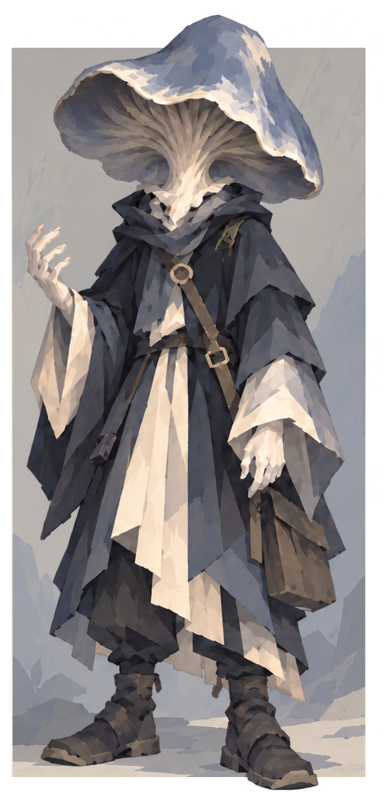
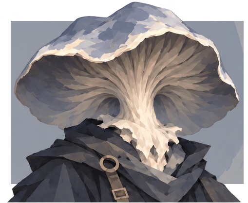
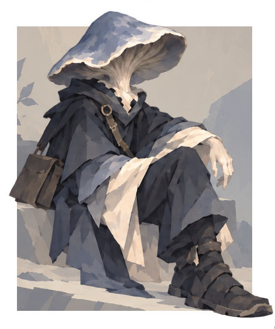
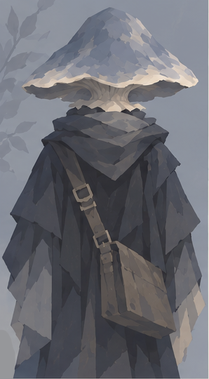

АЛЬБУС
Здесь также пахнет людьми. Мы все чем-нибудь жертвуем.

- Раса
- Миконид
- Возраст
- 15 лет
- Происхождение
- Круг миконидов под Квестпостом
- Род занятий
- Искатель приключений, волшебник
Внешность
- Рост
- 163 см
- Вес
- 62 кг
Альбус белый той влажной белизной, которую обнаруживают под корой упавшего дерева. На поверхности его тела различимы продольные волокна: у запястий они тонки и плотно скручены, на плечах расходятся рыхлыми пучками. В сумерках мякоть приобретает голубоватый оттенок. Земля въедается в неё охотнее чернил; после работы в подземных грядках пальцы приходится долго отмачивать.
Головы у него нет. Узкая шея переходит прямо в пластинчатое исподье серо-синей шляпки, края которой с возрастом стали шире и слегка завернулись вниз. Ни глаз, ни носа, ни рта природа не предусмотрела.

За пять лет он вытянулся, хотя по-прежнему уступает ростом большинству гильдейцев. Носит свободную одежду с широким воротом, пояс с футлярами для образцов и сумку, из которой иногда приходится вытряхивать землю. На ткани возле плеч то и дело проступает нежный грибной пушок. Альбус утверждает, что следит за этим. Уточнять, что именно подразумевается под словом «следит», не рекомендуется.
Его неподвижность легко принять за невнимание. На самом деле он может долго изучать одну каплю, застрявшую в трещине стены, одновременно слушая разговор. Когда разговор перестаёт представлять интерес, капля получает всё его внимание.
Характер
Альбус держится несколько в стороне даже среди знакомых. Общая радость доходит до него с задержкой; общий страх, напротив, он замечает быстро. В детстве чужая паника проникала в его собственные сообщения, и он помнит, как трудно было понять, кому принадлежит испуг.
Теперь он осторожнее с чувствами — своими и переданными через споры. Редко делится ими целиком, предпочитает подбирать слова. Его спокойный голос возникает в сознании собеседника чуть ближе, чем принято стоять при разговоре.
Он любознателен до бестактности. Может спросить у тяжелораненого, какого цвета была боль перед потерей сознания, а затем искренне недоумевать, почему расспросы пришлось отложить. Усвоенные правила вежливости соблюдает старательно, но иногда они заслоняют для него саму причину чужого неудобства. В таких случаях Альбус возвращается позже, уже без вопросов, и приносит то, что сумел приготовить или найти.
Ирония появилась у него под влиянием жизни на поверхности. Пользуется он ею скупо, с почти исследовательской аккуратностью. На замечание о том, что в гильдии снова пахнет сыростью, способен ответить:
— Здесь также пахнет людьми. Мы все чем-нибудь жертвуем.
Ему нравится производить впечатление существа рассудительного и малоуязвимого. Особенно перед вторым учеником Даэнорта. Поэтому Альбус тщательно скрывает обиду, плохо скрывает удовольствие от похвалы и совершенно не умеет скрывать желание оказаться первым.

Биография
Имя
Под землёй имена пахнут: сыростью, тёплой прелью, дождём, которого никогда не видели, — и мальчику хватало собственного запаха, пока в разлом не свалились чужаки и не пришлось звать их голосом, обещать дорогу, просить о помощи; а после, когда всё кончилось, он сам увязался за одним из спасителей, словно между ними уже протянулась нить, которую эльф по своей поверхностной привычке ещё не замечал. Даэнорт назвал его Альбусом — за белую мякоть, за молочный цвет тонких пальцев, — и мальчик унес имя к своим, дал попробовать, запомнить, после чего вернулся к учителю, поскольку тот знал вещи, которым внизу ещё не придумали вкуса.
Ученичество
У обрыва забивали первые сваи, перебрасывали мостки, обживали камень, а Альбус обживал чужую речь: учился складывать буквы, удерживать мысль внутри чернильных знаков, разбирать магию по Основам, хотя живое под шляпкой упрямо воспринимало её целиком. Больше прочего его занимал Мицелий, родное ведовство грибов и спор, где Влага питала нить, а Сущность позволяла ей помнить прикосновение; он выращивал свет в плошках, пробовал передавать ощущения через споровую взвесь и засиживался над опытами, пока мысли не делались рыхлыми, а утренний разговор ещё долго отдавал вчерашним сном.
Соперничество
Рядом учился другой, и оттого всякая наука обрастала счётом: кто раньше понял, кто точнее повторил, кому Даэнорт позволил больше, на чьей ошибке задержался дольше; Альбус слушал похвалы неподвижно, прятал досаду под серо-синей шляпкой и к вечеру непременно находил причину, по которой чужой успех следовало проверить ещё раз. Со стороны он казался отстранённым, иной раз насмешливым, поскольку отвечал с задержкой и умел так вежливо уточнить очевидное, что собеседник начинал сомневаться в собственных словах, однако любопытство выдавало его всякий раз: стоило показать незнакомое заклинание, и вопросы сыпались до тех пор, пока учитель не отправлял обоих спать.
Гильдия
За пять лет Квестпост разросся по обрывам, закрепился лестницами, вцепился домами в края разлома, а в Гильдию потянулись поручения со всего континента, пахнущие чужой бумагой, дорожной пылью, деньгами; Альбус вступил в неё, получил место среди приключенцев и быстро выяснил, что городская черта для него остаётся непреодолимее любого завала. Даэнорт требовал сперва сдать личный экзамен, поэтому мальчик растил полезные грибы, выполнял местные поручения, слушал вернувшихся и вместе со вторым учеником спорил, готовился, сердился — особенно когда выяснялось, что одного удачного заклинания для готовности опять недостаточно.
Экзамен
Наконец экзамен сдали оба, и на этот раз Даэнорт разрешил им самим выбирать полноценные задания Гильдии; Альбус долго стоял у доски поручений, перебирая названия мест, до которых теперь можно было дойти, а учитель тем временем собирался в собственное странствие, оставляя ученикам город, дорогу и непривычную необходимость решать без него.
